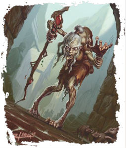

The towering walls of Overlook rose slowly but steadily over the horizon as our heroes drew ever nearer their destination. From a distance, the city looked as secure and serene as ever, but as they moved closer, they could see that all was not as they left it. A great mass of activity bustled around the gates, people lugging stone and timber this way and that, all beneath the watchful eyes of sentinels who stood dutifully atop the wall. One particular blond-bearded dwarf in plate armor - Captain Aerun - stood atop the gate shouting orders to everyone in sight.

Although the activity didn't appear especially rushed or frantic - indeed, they saw people pausing to talk or jest with one another as they worked (and when Captain Aerun wasn'’'t looking) - it appeared as though Overlook were mobilizing for war.
Our heroes were hailed as they approached, while the sentinels atop the walls and by the gates offered friendly but careful greetings. Multiple crossbows were trained on the party until they identified themselves, but once they did, their welcome became far warmer. Several workers and soldiers stopped to clap their hands, and the sentinels swiftly lowered their weapons and stood taller at their posts. Word had spread of their heroics on behalf of the city so far, and their return was seen as a good omen.
Speaking with the blond-beared dwarf officer:
"Well met, members of the Dusk Wardens, and welcome back to Overlook. I am Captain Aerun. Yes, the city is making preparations for war, though I don't personally see the need. It's not that we anticipate any specific trouble, and indeed, the Council of Elders and the various priesthoods hope that, with the defeat of the orc invasion and the closing of the Shadowfell gate, this city is good and safe for a long time to come. Still, recent troubles have stirred up a strong better safe than slaughtered mentality among the populace and the city leaders, and so the Council of Elders have ordered that Overlook's defenses be repaired and enhanced. I've been placed in charge of the effort."
Settling back in at Overlook our heroes took a moment to relax and recuperate after their travels and ordeals. Festivus went in search of her ocassional lover Bram Ironfell - only to find he was called out of town on business for the Elsir Consortium. Barases scoured the city for signs his brother Petraynus had ever passed through. And Kallista once again nearly drank herself into the gutter. Ultimately the party collected that evening at the Pig and Bucket Tavern, which is were Nerislove Stoneheart found them.

"Begging your pardon, m'lords and ladies, but you look familiar to me. You are the folks who saved us from the orcs, and from those foul creatures of shadow, aren't you?... Well, I'm sorry to disturb you and all, but there's someone been looking for you. Woman named Lavinya? She's a priestess at the temple of Erathis, over in the Divine Knot. She's been leaving messages all over town - says she desperately needs to speak with you. She begs you to come see her at the temple, just as soon as you can get there."
The next day our heroes answered Lavinya's call and went to the Divine Knot. They cannot help but notice, as they pass, that the old temple of Moradin appears to be under as much construction as the city ramparts. Great frameworks and ladders stood alongside the building, and they could see lumber stacked along the inner walls through the open windows.
When our heroes inquired about the work going on at the old temple, one of the locals reported:
“Oh, that. High Ancestor Durkik recently assigned most of his underpriests to restoring the old temple. Something about wanting to expand, I think, so that other races who might not be comfortable in the Stonehammer district could return to Moradin.”
When they finally reached the temple of Erathis it was obvious that the priesthood of Erathis had seen better days.
It was all but impossible to tell what color the stones of the temple might once have been, for then they were a repugnant mixture of smoke-stained gray, dirty-handprint brown, and bird-dropping white. The stenches of the Nine Bells district appeared to congregate there, as though seeking admittance and absolution, and our heroes had seen zombies that looked (and smelled) healthier than some of the unfortunate, impoverished souls shambling along the streets with empty eyes.
Three wide steps that didn't appear to have been swept in days rose toward a heavy wooden door that boasted a relatively fresh coat of polish - one that could not begin to conceal the rot beneath.
When our heroes entered they saw a largely empty cathedral, its pews old and candles burned down to nubs. At the far end stood an altar to Erathis, which was far better maintained than anything around it. A dark-haired and gold-robed half-elf, grown old before her time, knelt before the altar, rising and turning at the sound of the door.

"Thank you. I knew Erathis would guide you to me."
For a few moments she waited on the party, offering what comfort she could, pointing them toward the pews at the front of the cathedral (the cleanest ones), offering a few glasses of cheap wine, and the like. After a pause she frowned thoughtfully and began:
"My name is Lavinya. I'm the last priestess here; the others all departed years ago, when the Nine Bells went all to seed, and the temples with it. I keep it open and functioning as best I can on my own, but...
Do you know Haelyn? Haelyn is a wonderful old woman. She's the caretaker of the shrine to Erathis, over in Tradetown. I'm sure you know that most worship of Erathis in Overlook takes place there, rather than here. I must admit, I haven't always been a friend to Haelyn. I was...bitter, very bitter, at what happened to my temple. But after a time, we got to know each other, and we've become great friends."
And that's why I need you! Something is wrong! Something's happened to Haelyn, I know it, and maybe not just to her!
A few weeks ago, Haelyn just disappeared. I went by the shrine to speak with her and she was gone. There's a man named Grovald maintaining the shrine now. I don't know him; I've never met him before, and nobody I talk to knows him, either. He told me that Haelyn left on a spiritual retreat and would be back in a few months.
But I know better! Haelyn needed no 'spiritual retreat.' Her faith was strong, and it was centered on that shrine! And even if she had, she wouldn't have up and left - not without telling me.
I must confess, I went back at night and snooped around a bit, not just in the shrine, but peering through the windows of the groundskeeper's cottage. I've offered penance to Erathis for my trespass, but I had to know what happened! I didn't...I found no trace of Haelyn, but I did catch a glimpse of a letter through the cracks in the shutters. I couldn't read much of it, and I dared not stay long, but I'm certain it was addressed to 'G' - that must be Grovald, right? - and it began with 'I am commanded to ask if you've had any further problems with the worshipers of...' That's all I saw, but it sounds sinister enough!
And that, is where things got even worse. I went to the authorities, but they told me there was nothing to look into, that Haelyn - or any citizen - can travel as they please. I spoke to some of the other priests - Aelys of Bahamut, Durkik of Moradin at the Stone Anvil, Kyrrist of Avandra, even Matron Volorvyn of the Raven Queen. Some of these have long been my friends, and even those who were not have at least been respected colleagues. And all of them brushed me off! They were distant, uncaring, even cold, as though my worries were of no moment! Volorvyn appeared barely to recognize me, and while we've never been close, we've known one another on and off for years.
And that's when I thought of you, Overlook's new heroes. I'm terrified that something has happened to my friend and that something is wrong with my fellow priests. I should, we all should, be showering you with gifts and thanks, not heaping even more cares onto your shoulders - but I've little influence left in this city, and I have nobody else to whom I can turn."
When our heroes agreed to investigate, Lavinya smiled gratefully.
"You could talk to one of the priests, I suppose. I'm not sure they'd agree to speak with you at any length, though. Everyone's so busy with the mobilization. And these are important people; you can't just, uh, 'hero' your way into the building and confront them. Still you might learn something from them.
You could examine the shrine of Erathis. You might well find something I missed. Or you could search Haelyn's home, which is on the same lot as the shrine. I looked for her there, but when she didn't answer, it felt wrong for me to just barge in. But now..."
On the way to the temple of Erathis in Tradetown our heroes stopped in at the old temple of Moradin to investigate the construction. The amount of work going on there made the place look less like a house of worship and more like an anthill on a massive scale. Workers of all races scurried through doors and windows, clambering up scaffolds of wood and iron. The sounds of grunts, curses, shouted orders, and the monotonous thump of hammers on nails made it all but impossible to hear oneself think.
The work continued inside as well as out. Workers with boards on their shoulders, wheelbarrows, or heavy hammers moved back and forth. The floor was covered with dust, both stone and wood, and heaps of rubble lay in every corner.

Not everyone there was a simple laborer, however. Leaning against the leftmost wall, her eyes narrowing as she watched our heroes, was a young, heavily muscled woman clad in scale armor. One hand rested on the hilt of a longsword at her waist.
"Well, if it isn't the 'great heroes' of Overlook. Sorry, but the construction site is off limits."

When our heroes attempt to push past, abruptly, one of the dwarf workers turned and stops in front of the party, coming within inches of running his wheelbarrow over Lechonero’s foot. He hitched his thumbs through his belt - a gesture that put one hand uncomfortably near the haft of his hammer - and glared with beady eyes above a dirty beard.

When our heroes attempt to push past, abruptly, one of the dwarf workers turned and stops in front of the party, coming within inches of running his wheelbarrow over Lechonero’s foot. He hitched his thumbs through his belt - a gesture that put one hand uncomfortably near the haft of his hammer - and glared with beady eyes above a dirty beard.
"You bastards ain't welcome here. You might have the rest of the city hoodwinked, but not us. The Hammerfist clan has a bone to pick with you over that business in the Thornewaste."
Murrik Hammerfist continued to antagonize our heroes, several of his clansmen begining to form up around him, along with the Freeriders. When Lechonero confronted Megan Swiftblade she said
"The priests of Moradin hired us to make sure the old temple was free of any dangerous people or creatures for the renovation. You're starting to look dangerous to me."
Just as things appeared ready to escalate into violence a red-bearded dwarf, clad in worker's leathers and a smock but with the hammer of Moradin hanging about his neck, pushes his way through the crowd.
"All right, all of you back to work! I'm Ancestor Karros of Moradin. Why don't I escort you out?"
On the way out our heroes softened Ancestor Karros up and got him to talk. He was concerned that High Ancestor Durkik had assigned almost the entire staff of the Stone Anvil to working on the reconstruction of the old temple. He had barely kept enough priests on hand there to conduct regular services. Karros didn't speak ill of High Ancestor Durkik, but he hinted at the fact that he didn't approve. The idea of the renovation came out of nowhere, and neither Karros nor the other priests could figure out why it's being done.
High Ancestor Durkik called for investors from Overlook's dwarves to aid in the reconstruction. The Hammerfist Clan was among those to contribute money and workers. Many of the workers had been speaking poorly about the party any time their status as "heroes" came up in conversation.
Although he appeared almost unwilling to admit it, Karros confessed that Durkik hadn't been himself for weeks now. He was worried about the old priest.

Parting ways with Ancestor Karros our heroes proceeded to the primary temple of Moradin - the Stone Anvil - in order to investigate Ancestor Karros' claims about High Ancestor Durkik.
As compared to so much of the rest of Overlook, the Stonehammer district might almost be a different city. Broad, clean streets flow like rivers of rock between enormous, sweeping edifices, carved with near magical precision. The air is clean there, and the voices heard are raised in laughter or negotiation, without the tinge of desperation so common in some of the poorer quarters.
And then our heroes were there. It rose up before them like a fortress, constructed of blocks of stone larger than many of Overlook's houses. At its height, looking down upon even its tallest neighboring buildings, glint leaded windows in the shape of hammers. The doors at the entryway stood open, inviting all who would worship, and a good thing it was - for these doors are 40 feet high if they're an inch, and the lot of our heroes together might have difficulty dragging them open.
This was the Stone Anvil, temple of Moradin and the spiritual heart of Overlook.
Inside the sanctuary - which is no less sweeping, magnificent, and ostentatious than the building's exterior - our heroes saw about a hundred worshipers engaged in prayer, heads bowed and chanting in low, sonorous voices. The overwhelming majority of the faithful there were dwarves. The services were being led by a young dwarf female who read from a great, steel-bound tome that, when open, was nearly as broad as she was. There was no sign here of anything out of the ordinary, or of High Ancestor Durkik himself.
Things didn't appear so mundane in the halls surrounding the main sanctuary, however. A great many tasks appeared to have been left undone; floors were not swept, candelabras were unpolished, torches and braziers had been allowed to burn out. Inquiring about this some acolytes explain that most of High Ancestor Durkik's underpriests were currently hard at work restoring the old temple in the Divine Knot.
Asking for an audience with High Ancestor Durkik, our heroes were left waiting, and when they attempted to explore on their own, going deeper into the temple than most worshipers ever travel, they were quickly interrupted. Within mere moments, High Ancestor Durkik appeared, accompanied by a contingent of the city watch. He demanded, in no uncertain terms, that our heroes depart immediately. The guards were apologetic, but adamant. High Ancestor Durkik had the legal and religious authority to demand that they leave, and the guards were there to ensure they did just that.
Thrown out of the Stone Anvil our heroes proceeded on to Tradetown and the other temple of Erathis. As compared to Overlook's other temples, this shrine was poor indeed - and yet it offers a sense of intimacy that the greater edifices did not. Several wooden poles stuck in the earth supported walls and ceiling of heavy fabric, barely enough to keep the rain off the altar within it. The altar was littered with candle stubs and scraps of parchment, which were the remnants of prayers and offerings.
Beyond the makeshift sanctuary, a statue of Erathis stood in the middle of a pool of stagnant water, staring off toward the horizon. Many of the bricks of the pool were broken or missing, and a closer glance suggested that the "statue" was in fact a fountain at one point, but the mechanism had failed - likely many years ago.
Several rickety cottages stood on the edge of the property, apparently held together by little more than faith and an extra coating of paint.

Several townsfolk moved in and out of the curtain-housed shrine, leaving written prayers on the altar and occasionally glancing askance at a fellow who paces behind it. He is a tall human, bald-headed with features sharp as an eagle's, clad all in somber black. He muttered to himself as he paced.
It was pretty clear from his body language that the man didn't want to be there, though any time one of the citizens utters a prayer to Erathis, he replied with a quick
"So may it be."
When our heroes spoke with him, he introduced himself as Grovald. He answered some questions about Haelyn with the same "spiritual retreat" story he gave Lavinya. He claimed not to know where she went or when she would be back, though he was less than convincing. After that he dismissed the heroes, claiming to be busy praying along with his faithful.
When our heroes attempted to search the groundss Grovald threatened to call the city watch - forcing them to back off.
After the quick exchange with Grovald, one of the faithful, an older woman dressed in shabby but well-mended shawl and dress, stood up from the altar and turned her eyes on our heroes.
"I know you! Thank you so much for all you've done! I couldn't help but overhear, and a lot of us have asked him the same questions. We don't trust him, and we're worried about Haelyn. Almost nobody comes here after dark anymore, so if you want the chance to talk to him in private, when he's not so 'busy,' that'd be a good time to come back. Maybe you can find out what's going on."
Returning at night under the cover of invisibility, Kitara searched the temple grounds and Haelyn's cottage. The small cottage on the grounds of the shrine looked comfortable, but old and rickety. Bricks were missing from the chimney, and the paint was peeling from the walls.
Picking the lock, Kitara snuck inside; the dust of days, if not weeks, lay over a homey little abode. An ash-filled fireplace stood in one corner, with an old table and two equally old, but comfortable looking, chairs beside it. A pantry stood alongside a door that would almost have to lead to the bedroom.
A faint stench, foul and out of place with the cottage's peaceful appearance, tickled her nostrils. The stench was coming from the pantry, which contained several rotting vegetables, fruits, and cuts of meat, all swarming with ants and fruit flies. The perishable foods in the pantry and a chest of clothes almost completely full were not signs of someone who was preparing for a long journey.
Startled as Grovald entered the cottage, Kitara slipped back out again but saw Grovald light a fire in the fireplace and throw some papers into the fire. She quickly scaled the rickety chimney and used Mage Hand to draw the burning paper up the chimney into her hands. Though partially destroyed, the remains read:
"...unreachable for a time, as I must...the priests' orders as you would my own, for he...s always, be certain you destroy this mis... ...eneral Zi..."
Their suspicions aroused, Barases spoke to the plants on the temple grounds, and discovered that behind the fountain, not far from the nearest tree, a faint bulge in the earth marred the contours of the soil. It looked as though something was buried there recently.
Summoning the city watch, our heroes levelled their accusations against Grovald and when the watch dug up the mound behind the fountain discovered Haelyn's buried remains and carted Grovald off to prison.
Meanwhile, Kallista and Bin went to the authorities about Grovald and were directed to the Ministry of War - specifically, the office wherein the officers of the city garrison work. The Ministry of War was huge, consisting of six buildings arrayed around a central courtyard - all within an imposing set of guard walls, of course. As they approached the gate, two guards, a dwarf and a dragonborn, stepped forward and crossed their spears before them.
"State your business within."
Demanded the dwarf. Despite the gruff welcome, the guards were just doing their duty and ushered the pair into the office - one of the buildings nearest the main entrance to the compound.
A dwarf stood up from behind the desk as they entered. His blond beard was tightly braided, his armor brightly polished. It took them only a moment to recognize him as the officer they saw shouting orders from the wall when they first arrived in Overlook.
"I'm Captain Aerun. I'm honored to have Overlook's heroes in my office. What can I help you with?"
Aerun listened intently and politely, scowling in anger when Kallista mentioned some of the vile things she had seen, and shaking his head at the evidence against Grovald.
"These are indeed grave matters you bring to me. I'll get looking into them at once. And you once again have the thanks of a grateful city. Go on and take a load off, wherever you're staying. I'll let you know how the investigation turns out."
Kallista was suspicious of this apparent brush-off, feeling Captain Aerun was more interested in keeping them out of the investigation than he was in finding out the truth. In response Bin disguised herself as a dwarven clerical worker in the offices and began investigating Aerun himself. Though she found nothing explicitly incriminating, his plans for bolstering the defense of Overlook were wraught with inefficiencies and many apparently valid complaints about suspicious activity in the city were going unanswered. Additionally, Captain Aerun appeared to be in the habit of leaving the Ministry of War on regular "personal" errands unaccounted for in his schedule.
Kallista took it upon herself to covertly tail Captain Aerun while he went on one of his errands. Though he led her on a merry chase, ultimately she followed him to the Pig and Bucket tavern. Most of the building's interior consisted of the beer hall. Booths lined the walls, while long tables and rear-bruising benches filled the middle of the room between. Along the far wall ran a wooden bar - she could see the graffiti carved into it even from the door - behind which stood stacks of kegs.
Kallista managed to resist the temptation of the kegs just long enough to summon the rest of the Dusk Wardens. Sneaking covertly into shadowy stalls in the tavern they saw Captain Aerun in one of the far booths, speaking to a scruffy looking individual in a shabby gray cloak. After Captain Aerun left the tavern they once again attempted to follow him, when without warning, a number of thugs came charging from around corners and out of doorways, and holding their blades high!

The majority of the party stayed to confront the attackers but Kallista snuck off ahead to continue her pursuit of Captain Aerun. When our heroes dispatched their ambushers the bodies at their feet warped and shifted - the skin turned pale gray and the eyes grew wide and dark. This was no human who lay before them! They were dopplegangers, and one had a list of descriptions on it - descriptions of our heroes themselves. The list was stained with beer and sausage grease - which Festivus recognized as coming from the Pig and Bucket tavern menu they had just left. Captain Aerun had set them up!
Meanwhile Kallista darted behind pedestrians, into doorways, and through shadows, moving street to street without being seen. Using her knowledge of the seedier areas of Overlook she guessed that Captain Aerun was headed into the Blister. With less crowds to work with, Kallista instead darted around corners, climbed walls, tumbled over a gaps between rooftops, and leapt between roofs and balconies to stays near Captain Aerun at angles that made her harder to detect.
Ultimately she followed him to his destination - a warehouse in the Blister district. Nothing in particular made the warehouse stand out. It was a large, squat building, with a huge front door that opened by sliding up into the ceiling on rails. A rickety wooden staircase along one wall lead to a door that opened onto an upper level.

When the rest of the party caught up to Kallista, they entered the warehouse by force. A vast chamber stretched before them. Rows upon rows of crates - some stacked as high as 15 feet - formed aisles and corridors. A catwalk ran around the perimeter, as well as across the cavernous room at several points, with an array of chains and pulleys dangling beneath.

Several gruff-looking fellows, the sort you might not want to meet in a dark alley but wouldn't be surprised to find there, lurked atop the catwalk, atop several crates, and around a few corners, crossbows held at the ready. Among them was Goodman Kyrrist (a priest of Avondra).
A few other foes stood hiding in the shadows, also aiming weapons at our heroes. Their gray flesh and huge dark eyes were strong indications that they were not human! They were doppelgangers.
In one corner, a flight of stairs led to a balcony built into the catwalk. Several walls surrounded what was an office or counting house, which was occupied by little more than a table, a chair - and Captain Aerun, shock evident on his face as he rose. he wall behind him boasted a shuttered, glass-free window.
As our heroes burst into the office Captain Aerun did a seemingly impossible thing - he flew backward through the window - as if on strings and floated gracefully down to the warehouse floor He performed a telekinetic leap.
The encountered devolved into a pitched ranged battle across the catwalks and crates - ultimately Barases summoned a crocodile to root the snipers out of their hiding places. With the gang dispatched, our heroes searched the warehouse and discovered a hidden trap door leading down into a narrow, stone-walled hallway. Mildew darkened the mortar between the bricks and filled the air with the damp scent of rot. A steel door, speckled with rust, stood at the far end of the hall. It boasted a small barred window - through which our heroes saw a dwarf, his flesh bruised and beaten, his hair and beard matted with blood, standing chained to the far wall of a stench-ridden, claustrophobic cell. It took them a moment to recognize him as none other than High Ancestor Durkik Forgeheart!

Slowly, as though even so minor a move pained him, he looked up to meet their gaze through the bars, his eyes widening slightly as he recognized our heroes.
"Be careful. The door's trapped. And not to kill you, either. They don't want me escaping."
He gestured with a finger, the chain clinking, to indicate a series of tubes that protruded from the walls of the cell, pointing in his direction.
Kitara worked for several stressful minutes to disable the spike tubes before unlocking the cell and freeing High Ancestor Durkik. The dwarf slowly limped from his cell, wincing with every step. Clearly he was in a great deal of pain, but despite that fact, his eyes were alert.
"Thank you. You're the answer to every prayer I've offered Moradin. But I fear, as grateful as I am to be out and alive, that I've little good news for you."
As you've no doubt surmised, I was kidnapped and held here - a doppleganger was sent to take my place and I was tortured to provide information to make his impression convincing.
These conspirators work for someone called General Zithiruun. I haven't seen his face, but he wears a hooded cloak and a strange leather-and-steel harness. He questioned me at length - though I gave him nothing - but his focus on holding the Stone Anvil let me guess what he's after: Mountainroot Temple.
It's a subterranean structure underneath the Stonehome Mountains built by the same order that would later go on to construct the Monastery of the Sundered Chain. Built when the dwarves were still celebrating their freedom from the giants, it was not a dwarven structure, but a temple built for anyone who wanted to pay tribute to Moradin, of any race. It held great reliquaries of holy icons, enormous cathedrals where hundreds could worship at once, and even a doorway to the Astral Plane whence angels and exarchs of Moradin would appear to discourse with the god's most favored priests and champions. To facilitate a grand community of Moradin worshipers, the Mountainroot Temple had, in addition to its astral doors and its main entryway into the mountains, four mystical doorways constructed. Each linked to another temple of Moradin elsewhere in the world, so the faithful could come and go with ease.
And for decades, even centuries, the temple thrived. Slowly, however, relations between Moradin's faithful grew strained. Priests assigned to other, "lesser" temples grew envious of those at Mountainroot. Many of the dwarf faithful grew haughty, considering themselves Moradin's "true" children, and sought to oust all others, or at least put them in lesser places, denying them access to the temple's wonders.
Was it Moradin's wrath? A curse brought upon them by the giants they'd so long ago escaped? Or simply a natural catastrophe without greater meaning? None can say. Whatever the case, some centuries ago, the mountain was struck by an earthquake. Portions of the inner tunnels collapsed, damaging several chambers of the Mountainroot Temple, destroying others entirely. Panicked, the priests and the faithful grabbed up their treasures and holy icons - at least most of them - and fled using the surviving magical portals.
Once they'd settled elsewhere, the bulk of Moradin's priests decided that this way was better. By scattering from the temple, they would allow the dwarves to build their own shrines, without feeling constrained by the other races, and the jealousy that marred the priesthood would fade. Although they mourned the loss of the great cathedral, and those few treasures they'd been unable to save, they declared the quake to have been Moradin's will and left the temple abandoned. In time, most faithful, even most priests save those most thoroughly learned in their history, forgot it had ever been.
Most, but not all. After a few decades, a small group of Moradin worshipers - mostly dwarves, but with members of other races as well - returned to the Mountainroot Temple. They cleaned it up as best they could and vowed to maintain it until it should some day become important once again. The most powerful of their number took on the title of Caretaker and lived within the temple, in a small structure built inside the larger reliquary. The Caretaker carefully attuned himself to the temple's surviving magic, allowing him to control the constructs and divine defenses and traps that protected the structure from outside invasion.
As a member of that order I am one of the few who know about the Mountainroot Temple - though I am not the Caretaker and as such I am forbidden to enter it. I merely provide the Caretaker with supplies. Somehow Zithiruun knows about the temple and was questioning me about its magic and security.
As you've doubtless guessed, the Stone Anvil contains one of those portals to the Mountainroot Temple. I don't know why this General Zithiruun wants the temple, but it's clearly what he's after. It's funny, he's had me tortured for days to make me describe the Mountainroot's mystical defenses, but the truth is, I don't know much about them. I know about the temple only because, as High Priest, I was told of it by my predecessor. I can tell you that the defenses are psychically linked to the Caretaker, allowing him to control them, but beyond that, I know little. But even had I told them that much, I doubt they'd have believed me.
A few days ago Zithiruun stormed off insisting he was going to 'find out for himself.' Chances are that's were he is now.
I don't know why he wants the temple, but I know it cannot be good for us. I know not who else in this city might have been compromised - who can be trusted. That leaves only you.
The entrance from the Stone Anvil is carefully hidden within an old sepulcher. The chamber is hidden behind a secret door; I can escort you to it, but no farther. What I cannot do is tell you how to access the portal, for I don't know, and I am oathbound never to enter the sepulcher. But my hope is that, once you find it, you can figure out how to use it.
I must ask you one thing more. When the Mountainroot Temple was abandoned, the priesthood took most of our ancient religious relics with them. Most, but not all. Somewhere within the temple lies a tome entitled, when translated into Common, the Incunabulum Primeval. It is a book of great power for those who know how to use it. If you can find it and return it to us, I can promise you a reward of no less than 3,600 gp from the temple treasury, as well as legal right to any other treasure you find in, and can carry out of, the Mountainroot."
Durkik lead our heroes back through the city and the towering halls of the Stone Anvil. Several of the priests and guards appeared nervous about allowing them to pass, but none were prepared to gainsay their guide.
After a dozen halls and several wide stairs, Durkik stopped inside a great chamber. Shelves of old scrolls lined the stone walls, and great marble tables occuppied the room's center. Dust lay thick over it all, proving that this room was rarely used. For a few moments, the priest fumbled with the scrolls on one particular rack. Finally, a loud click resounded throughout the room, and one of the walls slid open with a deafening rumble and a cascade of powdered stone.
"This is it - the sepulcher. I cannot go any farther."


Our heroes were left standing at one end of a long chamber. Chandeliers hanging from the ceiling sprang to life even as they passed through the secret door, illuminating all that lay before them.
To the right and left, stairs led down to an open lower level, transforming the floor on which they were standing into a central walkway, with two narrower ledges along both sides of the room. At even intervals along those walkways the floor abruptly widened, almost like the teeth on a gear.
At the far end of the chamber, a bright silver filigree of unimaginable complexity bulged from the wall. It showed a scene of Moradin hard at work at his forge. Four statues - two flanking the filigree, two flanking the entrance - showed Moradin with a pair of ravens perched on his shoulders. Perhaps these were meant to honor the Raven Queen, who watches over even Moradin's dead.
Once they had come closer, our heroes could see an old stone door in the wall behind the filigree image. They could not, however, see a way to access it.
Ultimately Kitara touched the filigree in an attempt to get through to the door. The image suddenly bent as the face of Moradin turned toward her and spoke in a voice of rending metal:
"Who would step through the portal to the heart of Moradin's worship must first prove he understands Moradin in his own heart. Think you carefully on Moradin's precepts, his teachings, his actions, and his favored disciples. Then speak unto me a parable, a tale of Moradin, not that you have learned from his texts, but that you have created yourself. Let it show your understanding of his words and his ways, and you may pass."
Unfortunately the party's largely atheistic ways left them ignorant of the finer points of Moradin's dogma and a magical trap was sprung. From the iron image, thin strings of metal - liquid, as though melting - shot forth. They struck not at our heroes, but at several of the hanging chandeliers, forming a canopy of metallic strands overhead. From those chandeliers, great lengths of chain dropped to the floor and then reared up like striking serpents.
After dismembering the chains and rendering the precious filigree asunder, our heroes forced their way through the heavy stone door. They felt no magic - no tingling or shimmering. It occured between steps; one instant, they were in the sepulcher, and the next they were...not. They emerged into a great, stone-walled chamber. Numerous doorways - many of which were contained within deep stone arches, almost like artificial caves - provided egress. A platform with multiple stairs stood near the chamber's center, presumably for a ceremonial purpose long since forgotten. The eastern portion of the room appeared to have been largely damaged in an ancient cave-in, marring one of two great reliefs that adorned the far wall.


Perched on one of the archways and atop the undamaged relief, a pair of foul females with ragged hair and the claws and wings of vultures turned piercing eyes in our heroes' direction, letting loose with a terrible, predatory cry. Only a few yards away, what appeared to be a scruffy, abnormally short dwarf slystone dwarf ruffian peered at them between slitted lids. From the corner of his eye, Lechonero spotted a second thuggish-looking dwarf skulking quietly in the shadows of the broken wall.
After a quick skirmish with the fey our heroes found they were trapped - they couldn't return through the door way they entered through nor any of the other portals in the room. Instead they headed deeper into the temple.
Passing out of the room and down a narrow passageway they emerged into a mostly empty chamber containing a small round table and a few chairs. Several cracked teacups and ale mugs, covered in dust and cobwebs, stood on the table where they were abandoned so long ago.
Off through one door, wooden racks lined the walls of the next room, empty and dust-covered. From their size and shape, Festivus guessed that they once held bottles of wine and kegs of ale.
The other door led to a room containing several long tables, capable of seating dozens, stretching the length of the room. Chairs were scattered about, some having been knocked over or broken just recently. A few humanoid corpses - small, with gray skin and wicked teeth quicklings - lay strewn about. Of whatever slew them, there was no sign.
Backtracking, Lechonero discovered a secret passage from the tea room into an uneven room that was clearly a repository of a sort. The walls were of heavy stone - heavier, even, than any seen elsewhere in the temple - and several short flights of stairs led to vaultlike rooms. These separate chambers boasted heavy portcullises, though the gates were all raised.
Three twisted, grotesque little humanoids, with deadgray skin and inhuman features quicklings, dropped the coins they were examining as our heroes entered. They were joined by another pair of harpies, skulking just beyond two of the entries to the vaults!
After a heated combat that ranged across the room (setting off daggerspring floor traps) our heroes bested the fey and claimed the riches of the vault for themselves - including a wicked looking spiked chain kept under lock and key. Searching the room our heroes discovered a secret passage down through a trapdoor but chose to explore the rest of the temple first.

Returning to exit through the kitchens, our heroes emerged into an enormous area. Some of our heroes had seen keeps smaller than the vast chamber around them. Roughly oval in shape, save for the crumbling walls to the east, the chamber consisted of multiple levels. Stairs in the room's center, as well as great sweeping ramps around the sides, climbing to the second level 20 feet above. One of those ramps had partly collapsed along with the walls. Steep stairs and slopes led from there to a third level, and a platform not unlike the one in the temple's entry chamber stood high atop that. Huge chunks of wall and stone stood along the broken edge, forming natural ledges, and a deep crevice ran a jagged path to the southeast.
The room was filled with malicious fey: another of the vile, bestial-looking dwarves slystone dwarf ruffian was hiding in the lee of the stairs. Above, there were several insectoid-featured humanoids banshrae dartswarmers perched on various ledges. And there were yet more foes - twisted gray humanoids roughly the size of halflings quickling runners, lurking around various corners and in the shadows.

After a few moments of combat with the fey, a deafening boom rang out over the chamber, echoing through the vastness. Twice, three times, and then they heard a sudden shattering and the sound of wood rebounding off stone as the double doors burst open, and jagged bits of the lock hung loose. Through the open doorway barged an array of horrific figures: several green and mottled trolls, a pair of smaller creatures with similar features and narrowed eyes spitting trolls, and - most terrifyingly - a broad-shouldered troll with two shrieking heads. Accompanying one of the small trolls was a red-scaled reptile on a heavy chain, smoke rising from its nostrils and from between its jagged teeth Smudge.
In an epic three-way battle our heroes emerged victorious over both the fey and the trolls. Lechonero managed to tame the Redspawn Firebelcher (over Barases' heated objections) and named him Smudge.
With Smudge in tow our heroes headed east through the collapsed tunnels. Climbing up from the crevice, they had a brief instant to look around. They were in a cathedral or religious sanctuary, far smaller than the main one behind them, and the hall boasted a dais at the far end, behind which loomed a great relief of Moradin at his forge. A line of columns ran down both sides of the room; two of the great pillars had fallen, apparently toppled in the same cataclysm that created the crevice. And then their brief moment of observation had passed, as a cadre of one-eyed giants, axes held high, converged on our heroes! Joining the cyclops were a handful of gnome-sized fey skulking in the shadows slystone dwarf ruffians, and another of the insectoid fey banshrae dartswarmers crouched upon the steps of the dais, its unblinking eyes gazing in their direction.
Through the melee Kitara spied an old dwarf crone, ancient beyond belief, atop the dais, almost blending in to the relief beyond. As the combat began in earnest Kitara and the dwarf locked eye and recognition and shock caused the crone to drop her disguise; the dwarf melted away to reveal a Howling Hag - and one Kitara recognized from her past as Hethralga "Our Lady of the Deathly Song", a personal servant of King Cachlain and a member of the coven responsible for her ritual mutilation. Flying into a rage, Kitara charged through the fey directly at Hethralga - who began to flee. Throwing spell after spell at everything in her way Kitara cleared a path to her quarry and with a final spell turned her into a toad.
In a last ditch effort to stop her, the cyclops started knocking over the remaining columns in the chamber. A low groan reverberated through the sanctum, sending dust raining down from above. And then the rain became far more than dust, as bits of rock began to shake loose. Kitara grabbed the toad and dived into the next room to avoid the rockslide.
With her troops defeated, our heroes subdued Hethralga once she returned to her normal form and questioned her. Under threat of being left alone with Kitara, Hethralga revealed that King Cachlain had sent her to recover the Incunumbulum Primeval - "a parchment voice" of great power that he had sought for some time time. Only recently, however, had she learned that its retrieval had become urgent, because the court's divinations suggested that someone else was about to get their hands on it. She admitted that Cachlain's new counselor - someone named Sovacles, whom she had never met - tried to talk him out of sending them, but that the king was too desperate to get the book. She explained that they could not leave because of "the Others" - a band of humanoids consisting mostly of trolls - appeared and took the Caretaker prisoner, thus cutting off all possible exit. They had been engaging in regular skirmishes with these "Others".
"They are organized and serve some higher master. But I do not know who. Perhaps they are the reason Cachlain felt we must retrieve the parchment voice so swiftly. Now? I seek only to escape the temple. A portal to the Feywild stands at the base of the mountains, where the waters flow from above to reach the plains. I would return home - with the Incunabulum if possible, but at least with my life."
Through further intimidation she revealed that she already had the tome and exchanged it for her freedom and a pact of non-interference. The tome was an enormous book, nearly 2 feet tall by 18 inches wide, and almost a foot thick. The pages were an incredibly heavy parchment, while the cover consisted of thin planks of wood that were bound and hinged in iron. The book was written in Dwarven, but also in a sort of cipher; no attempt at translating or decoding it functioned without either the proper rituals, known only to the priesthood of Moradin, or magic more potent than any our heroes possessed.

Wearied from their battles, our heroes retreated to the Underchambers under the Grand Cathedral looking for a place to rest. The initial chamber was apparently a foyer or waiting room. A ragged rug covered the floor, with a few old indentations indicating where chairs used to sit. Through a cloakroom to the northeast they entered a room lined with wooden-walled monastic cells.
Beyond it lay a combination meeting hall and library. A long table sat amid a smattering of chairs, and the chamber's western side was occupied by a more heavily upholstered chair, a bookcase, and a small altar to Moradin. All were covered in a fine coating of dust.
The last room appeared to be an actual forge, which was perhaps used for ceremonial purposes or the creation of magic items. Two anvils occupied the room's northern side, while a fire pit filled with ancient white-gray ashes took up the center of the chamber. Against the south wall, a larger anvil stood beneath the unblinking gaze of a statue of Moradin.
After disarming a magical trap and dismantling some guardian constructs, our heroes secured the area to rest before pressing on.
With the Incunumbulum Primeval in hand and the means to their escape clear, our heroes advanced on the Reliquary north of the Grand Cathedral where Hethralga said the "Others" and teh Caretaker were based. They entered a wide corridor. Ahead of them, two flights of stairs, separated by a long landing, led to a platform high above. Two figures stood atop that platform, apparently conversing. One was a rust-hued dragonborn clad in heavy armor. The other was a slender figure, its features hidden by a hooded cloak. He was clad in a sort of leather-and-steel harness. It looked less like armor than like the creation of a maddened surgeon - a full-bodysuit version of a brace designed to hold a broken limb in place.
They saw them only for a split second, for before the door had even fully opened, both had stepped away from the edge and out of sight.
At the top of the stairs four stone stairs came together, forming a small platform about 20 feet above a larger, circular surface. That surface appeared to be made of glass or crystal, allowing a full view of the various chambers below. Some of those chambers extended out from beneath the crystal - openroofed so that our heroes could still see in. The stairs to the north rose upward, rather than down, culminating in a large set of double doors several dozen feet above the current level, and a pair of massive statues of Moradin stood in the northwest and northeast corners. To the southwest stood a pair of small buildings - the only structures in the entire cavern that appeared to have a roof.
An array of humanoid creatures stood scattered about the chamber, both on the platform or stairs, and down on the ground level. Not a one of them looked especially thrilled to see our heroes.
A pitched battle ensued between our heroes and some dragonborn gladiators, a spitting troll, and a handful of human thugs. An eidolon - a construct guardian in service to the temple - confused by the tortured Caretaker worked against our heroes. Despite the odds, our heroes were victorious.
Looking for the missing figure General Zithiruun our heroes opened the double doors at the top of the stairs. For an eternal instant, the world faded away as they stood upon the precipice of infinity the Astral Sea. An ocean of pearlescent silver stretched ever onward, its tides and crests all but invisible as they slowly traversed the great expanse. Beneath those waters, stars and constellations twinkled with almost blinding clarity, and far in the distance, the great peaks of an unknown isle protrude from the endless waters.
The sense of vertigo there, at the edge of the world, was almost overwhelming, striking not merely at the body but at the mind and soul.
Turning away from the double doors, the party searched the Reliquary, picking through old tapestries, paintings, sculptures, books, and scrolls. Most of the artifacts had already been looted.
They moved onto the separate building and its attachment. They were the only two structures in the cavern to have roofs, and were clearly of far more recent construction than most everything else therein. The walls were of thin stone and did not match the surroundings, and the floor was covered haphazardly with a thin rug. Several tables and chairs sat scattered about, and a cooking cauldron occupied one corner.
Apparently a sitting or study room, the chamber contained little but old, decaying chairs and a few small tables barely wide enough for a large tome.
What was once a bedroom had been transformed into a chamber of horrors. Old blood had matted the carpet into a thin film that crunched beneath their feet. Dull blades and needles protruded from the surface of a desk, where they were apparently stuck for safekeeping. A wooden bed frame leaned against the wall at an angle; chained to it, dangling by his chafed and bloody wrists, was what appears to be a dwarf with hair and beard of writhing flame! Despite its touch, the wood of the frame showed no evidence of burning.
In a panicked reaction, Kitara magically doused the flames - only for them to reignite shortly thereafter as the dwarf turned out to be an azer - a race of beings from the Elemental Chaos with fire for hair. Stunned by having his hair put out, the Caretaker awoke from his torture-induced unconsciousness.
While alive, the Caretaker appeared to have been driven mad by the tortures inflicted upon him. With a combination of healing from Barases and Festivus and gentle coaxing and preaching on the tenets of Moradin they slowly brought the Caretaker back to himself. The azer blinked once, and when he looked at them again, his eyes were clear - or rather, they appeared to burn with an inner fire that they lacked earlier. He spoke in heavily accented Common.
"You have my thanks, strangers. You should not be here, but as you are - and as I needed you - I will take this to be Moradin's will. I know not who these creatures were, who invaded my home and dealt so cruelly with me, but I know their intentions! I heard them plan! They seek to attack the city of Overlook, from both without and - through my temple - within! Even though the latter has been thwarted, the former might yet lie ahead; Overlook, and indeed Elsir Vale, might suffer greatly. But tell me, who are these villains? Do you know? Tell me all that has happened, please...
I knew that the tall one wanted me to turn over stewardship of the temple to him. I fear that, in my pain, I might indeed have granted him control over some of the constructs, but I denied him any more than that. I...I fear that when you awoke me from my stupor, the portals were instantly unbarred. He has likely fled already. But at least I can swiftly return you to Overlook the same way...
I realize time is short, and that you must hurry back to warn the people of Overlook. Nevertheless, I must ask you...can you spare an hour, and perhaps a bit of your hard-won gains, to aid me with one final task? After the blood that was shed here, I must perform a ritual to reconsecrate the temple to Moradin. I cannot do it alone, and if you do not aid me, I will have to walk several miles through the mountains to find assistance at Bordrin's Watch. Perhaps this sounds to you like the ramblings of an old fool, but I believe fully that Moradin will smile upon us for doing so."
Our heroes agreed to aid in reconsecrating the temple and spent precious time and residuum to do so. For just an instant, as the last echoes of the rite faded away, the entire room grew ever so slightly warmer, as though heated from within by the fires of a small forge. The faint chime of hammers on steel reverberated from all around our heroes, and then once more there was silence.
With the portals open, our heroes returned to Overlook through the door by which they had arrived at Mountainroot Temple and emerged back into the sepulcher in the Stone Anvil. Relating all that had transpired to High Ancestor Durkik, the priest took the Incunabulum Primeval from them with thanks and quickly ushered them out to meet a waiting squad of soldiers.
Durkik and the soldiers escorted our heroes through the streets of Overlook and the gates of the mighty Caer Overlook, until finally they reached the imposing doors of the High Hall. Standing on the dais in the center of the chamber were three of the Council's five members, as well as several more soldiers and High Priest Durkik Forgeheart. Upon seeing our heroes, Great Elder Morgoff Stonefirst waved at them, not to speak to them from below, but to join them upon the dais!

Without a moment to rest our heroes found themselves, along with the present members of the council, High Priest Durkik, and several officers, standing in a perfectly square room of stone walls. A table in the center of the room boasted an intricate model of Overlook, while each of the walls showcased maps of the surrounding area. Great Elder Morgoff asked Durkik to offer a prayer to Moradin to open the meeting. Once done, he said:
"I was hoping to wait until all our members were present, but we've still not heard from Elders Itrika Mountainhome or Olman Sledgemore - they are, presumably, occupied with other duties and our messengers haven't reached them to tell them of this emergency conclave - and we've no more time to wait. High Ancestor Durkik, as well as several other citizens, such as Priestess Lavinya, have told us a bit of what's been happening our city. But I'm given to understand that you can tell us far more. Please, what's going on? Is Overlook in danger?"
After our heroes related what they knew Morgoff continued:
"Overlook is a martial city. We have mighty walls, strong soldiers. But we are accustomed to fighting foes such as orcs, not monstrous enemies such as trolls, who rise again each time they fall. My friends, you have more experience with such things. Will you help us plan? And would you make yourselves available to us throughout the siege, to deal with such dangers as our guards - skilled though they are - are unprepared to face? I offer you what reward I can for your help, though I cannot cite you numbers or amounts until I see what resources remain when - if - Overlook survives the coming days."
After long hours planning for the defense of Overlook and the coming attack Great Elder Morgoff's shoulders slumped.
"I fear we've done all we can for now. We must go and spread word to our soldiers of what is to come, and what they must do. My friends, if you are willing, I would have you stay here at Caer Overlook tonight, so that you are ready on a moment's notice. I can have people show you to guest quarters. I suggest we all get a good night's sleep; I fear the next days will be tiring indeed."

Lechonero went out scouting during the night and spied a mercenary army - consisting mostly of human soldiers and trolls, but with dragonborn and other creatures scattered throughout - approaching Overlook from the south. Though he doubted his eyes at first, he also saw a flying ship sailing away in the opposite direction. He quickly returned to Overlook ahead of the army to warn the defenders and our heroes settled in for the night to wait.
They awoke in the morning to the sound of catapult boulders slamming against the ramparts, and were swiftly summoned to the Council's war room.
Although the sentries fearfully reported a large force of trolls and other creatures approaching the gates, the army sounded smaller than our heroes had feared. Perhaps Zithiruun wasn't able to assemble as many troops as he’d hoped.
As they stood in the war room, discussing tactics, a messenger barged in and dropped to one knee, panting, at Great Elder Morgoff's feet.
"My apologies for interrupting, but Nine Bells is burning! A creature - gods, I've never seen anything like them - they're flying over the district and dropping alchemical fire bombs! The local soldiers are dealing with some of them, but there are just too many!"

As they raced through the city toward Nine Bells, our heroes noticed a squad of soldiers standing victorious over a band of defeated trolls. Durkik stood beside them, his hands flickering with holy fire.
Our heroes rushed to Nine Bells to intercede (especially worried that Amyria might be harmed as she prayed in the Temple of Ioun). When they arrived flames danced across a cluster of rooftops, and the crackling from the fire drowned out the screams of panic as citizens scrambled in all directions. In the smoky air above, a trio of horrid winged humanoids, with mottled blue skin berbalangs, whirled about on the inferno-birthed updrafts. Every few moments, one of them hurled a clay jug that burst into flames as it struck a nearby building.
After shooting down the berbalangs and dealing with the spreading fire our heroes checked in on Amyria only to find her missing! They weren't afforded time to worry however, as a military courier caught up with them and shouted:
"The outer wall! They've breached the outer wall, just north of the west gate!"

Hurrying down to the west gate our heroes arrived at a scene of destruction. Rubble lay strewn about - rubble that used to be a 15-foot stretch of wall. Visible just beyond was a huge tree trunk, capped with bronze - presumably, the battering ram that created the hole.
Moving through the gap were several hideous trolls. The city guards appeared to have a few occupied, but others - two in heavy armor, one with two heads, and one far smaller than the others - were moving unimpeded into the streets.
Barely overcoming the powerful trolls, our heroes received no rest as without warning, they heard Great Elder Morgoff's voice in their heads.
"Our diviners have located Councilor Mountainhome. A siege missile struck her home, which now burns as she lies unconscious! Please save her!"
Farther down the street, our heroes spotted a team of dwarves wearing the holy hammer of Moradin. They were charging unharmed through a burning building to reach a band of mercenaries threatening civilians. Standing behind them, Durkik chanted passages from the Incunabulum Primeval.
Our heroes rushed to the Stonehammer district and found the expensive apartment of Counselor Itrika Mountainhome well and truly aflame. Climbing through upper-story windows and choking through the smoke Karrion and Kallista (naturally resistant to fire) found Itrika's recumbent form and carried her to safety.
Exhausted and drained our heroes retreated to High Hall to rest for the night as the battle continued to rage across the city.
Even as they rose from a night of troubled, martial dreams, a knock sounded on their chamber doors. High Ancestor Durkik stood outside, looking grim.
"I bring word from Councilor Morgoff. In the late hours of the night, a squadron of soldiers was dispatched to investigate reports of enemies in the streets close to Caer Overlook. None have returned. As soon as you've risen and readied yourself, I'm to show you on the map where they were assigned, and ask you to investigate."

Arriving at the scene our heroes found the corpses of dozens of Overlook's soldiers scattered around the open courtyard, and across the stoops of the nearby buildings. Some were badly burned, some slashed to ribbons, and some rotting as though they'd lain dead for weeks on end. Two dragonborn in heavy armor waited across the courtyard; one stood beside a large, red-scaled reptile Redspawn Firebelcher exhaling large puffs of smoke. Hiding amid the rubble and ruin was another dragonborn, one of darker scales and armor, wielding a pair of broad-bladed daggers.

Shortly after engaging the mercenaries, a horrific boom reverberated from a nearby building as a massive beast soared over the rooftop, knocking several of the stones from their place. What appeared to be a dead dragon Rathoraiax, its scales dull, its gray leather skin showing between the gaps, rose into the air on broken wings. The entire top of its jaw was missing, showing upward pointing teeth and a wormlike tongue that thrashed about with a mind of its own.
And riding atop that beast was a humanoid figure General Zithiruun clad in heavy hides, contained within a body harness of iron joints and leather straps. His limbs and face were gaunt, nearly desiccated. Several old wounds hung open, leaking trails of blood and puss, showing bare bone in some spots and metal plates in others. But despite his old injuries and deformities, his narrow features and his yellowed, leathery skin clearly marked him as one of the dread githyanki, raiders and conquerors of the Astral Sea.
This was General Zithiruun.
The battle raged between the buildings and across the rooftops - arrows and spells exchanged for blasts of poisonous, necrotic gas from his reanimated mount Rathoraix. Zithiruun appeared to glide rooftop to rooftop like a marionette telekinetic leaps and tossing his silver saber to slash at our heroes before magically returning to his hand.
As things looked grim for our heroes, for just an instant, as they faced their enemies, they once again felt a faint warmth, as of a forge fire, and heard the distant sound of chiming hammers. Their spirits soared with Moradin's blessing.
Though close to death, ultimately our heroes proved victorious. Once word of Zithiruun's death spread through the invaders, their attack gradually weakened until a cheer arose from the sentries atop the wall, as a force of several hundred dwarves from Bordrin's Watch appeared on the western horizon, striking at the enemy from behind and driving them back into the wild.
For the moment, our heroes had learned that the githyanki are behind at least some of the troubles that had beset Elsir Vale, and they could be content in the knowledge that they had defeated one of their major enemies and saved Overlook.
Lavinya abandoned the temple and instead took over Haelyn's duties at the shrine.
"If this is where the people wish to pray, then who am I to tell them otherwise? Erathis needs no stone walls, merely the hearts and souls of those who would bring civilization and culture to the world. Haelyn understood this long ago. I wish I'd not taken so long to learn it myself."
Durkik had experienced a reawakening of faith. His time of confinement and torture, followed by his rescue at the hands of our heroes and his survival of the siege, had caused him to reevaluate the previous years. From a beaten-down, tired, and increasingly corrupt politician, he returned to his younger identity as a devout priest of Moradin. In helping to turn him around, our heroes had gained a grateful and powerful ally, and they had done great good to the religious community of Overlook as a whole. This was particularly important, considering that the high priests of other temples were suborned by the githyanki, and their replacements were all younger and inexperienced. Over the next months, Durkik emerged as a spiritual leader for the entire city.
Overlook had weathered the storm, and though damaged, the city stood tall and proud. The Dusk Wardens were hailed as great heroes, and several different establishments offered them free room and board for several months. They were invited to dine with the Council of Elders several times over the next few weeks.